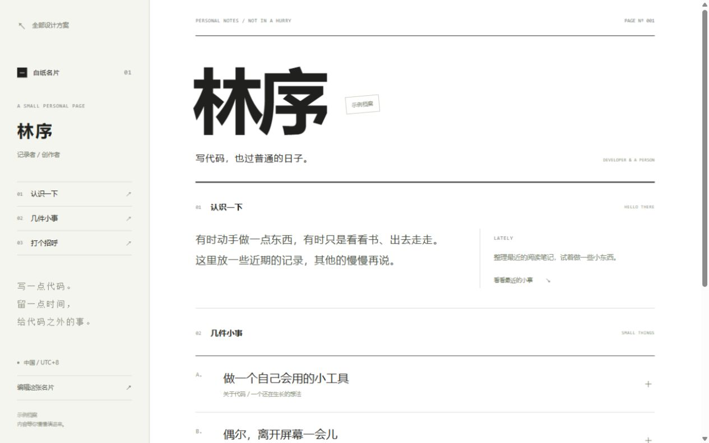
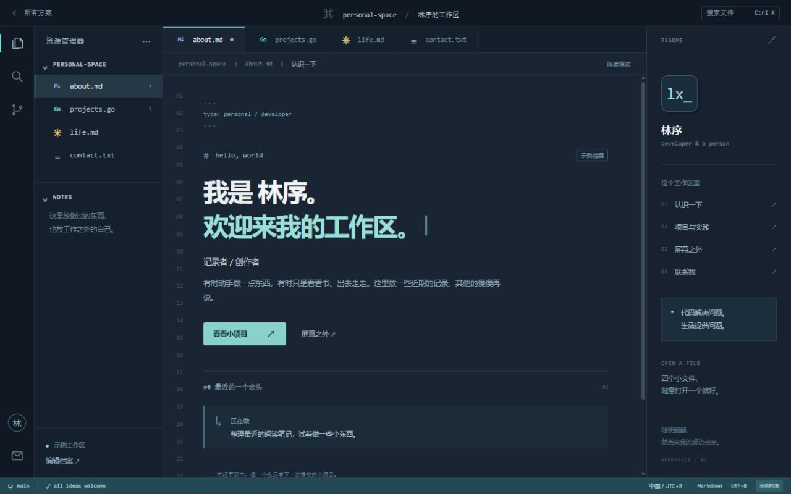
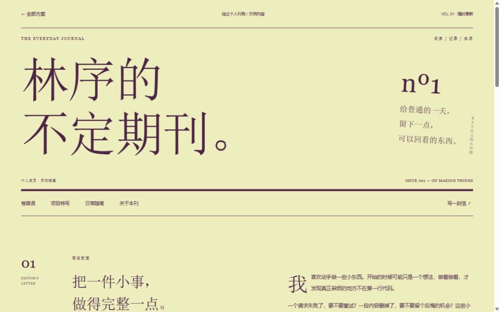
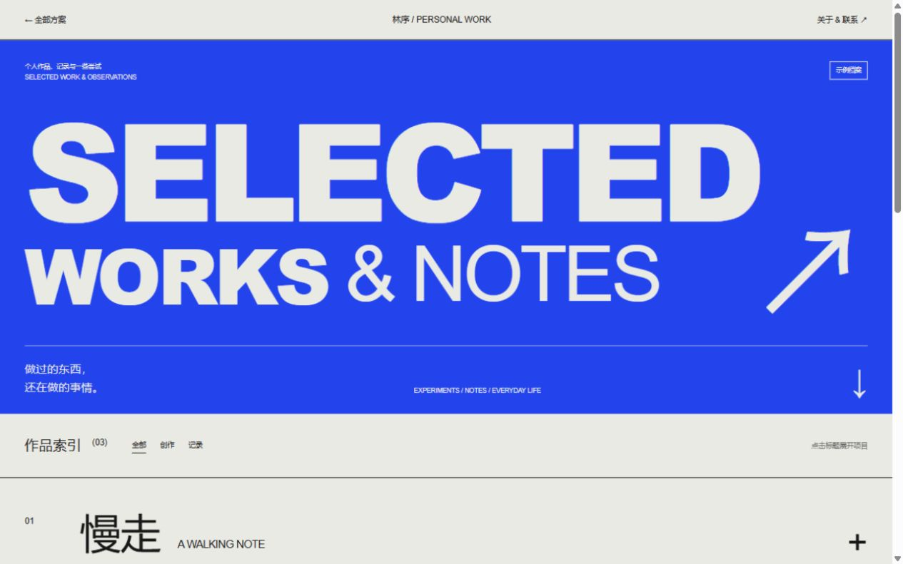
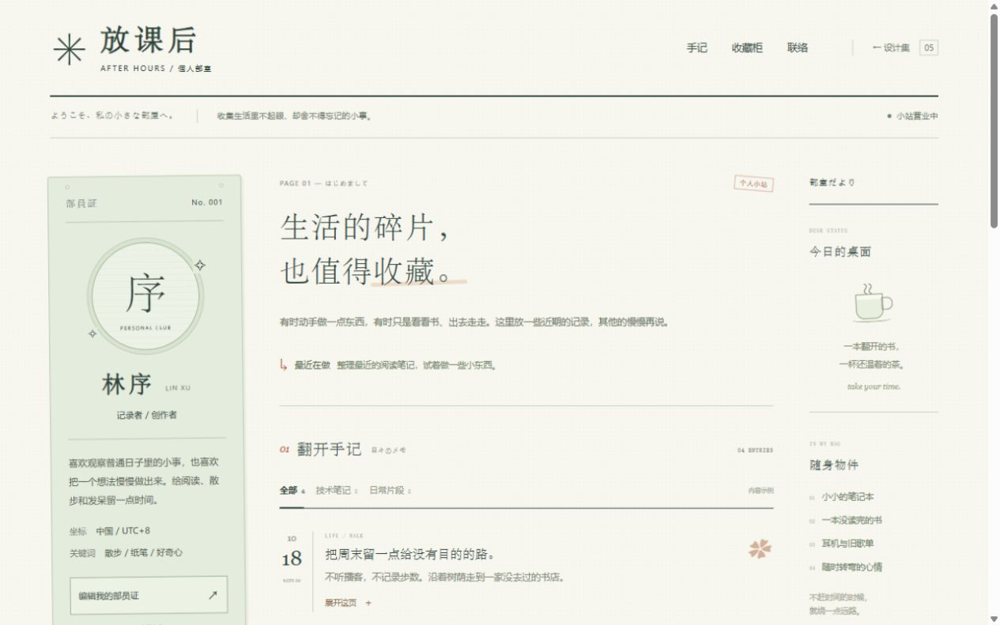
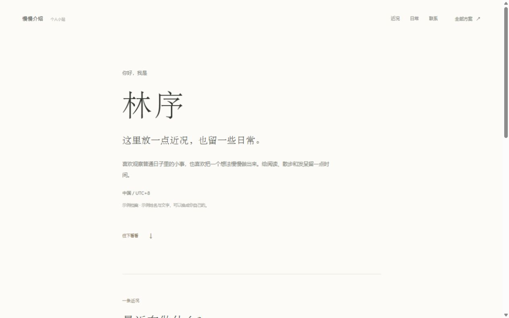

01
白纸名片
PERSONAL CARD一段介绍、几件小事和一个联系入口。用黑白字与固定侧栏，留下一张简单的个人名片。
侧栏名片 / 黑白排版打开方案 ↗
从信息结构、阅读方式到交互，各自重新设计。
每一套都能完整打开，再慢慢比较。

一段介绍、几件小事和一个联系入口。用黑白字与固定侧栏，留下一张简单的个人名片。

文件树就是导航，简介和项目各有一个页签。像在开发工具里翻看一个人的文件夹。

有期号、卷首语和项目特写的个人杂志。技术手记和生活随笔，放在同一本刊物里。

先看到作品，再认识作者。用编号、超大标题和可展开的项目说明，组织一场小型展览。


只放一点必要的话，留出足够的空白。像读一段简短的自我介绍，慢慢认识一个人。